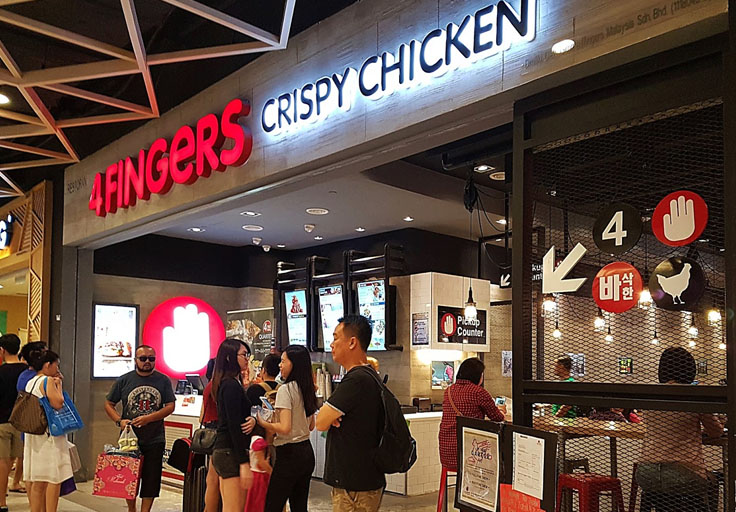

Chichicky
Chichicky is a “Gourmet Discovery Station” serving fried chicken. The innovative and creative design of the station and the deliciousness of the chicken make for an unforgettable experience.
Written by HungryTown editors Thursday 15 June 2023
From greasy to gourmet, these chickens are the best in the city, and they are finger-licking good.Korean,Mid Valley City
This Singaporean chain opened in KL a few years back during the Korean fried chicken craze, and has managed to hold its own among fierce competition. For fried chicken, 4Fingers only offers drumsticks and wings, but they’re good enough that the crowds keep coming back. The wings, especially, live up to their ‘crispy’ claim. You can choose either the soy garlic or hot and spicy sauce, but we recommend the former. Sure, it’s a tad sweet, but the combination of the sweet and salty on the chicken makes the wings very addictive.
Operating Hours : 10am–10pm, Daily
Address : LG-074A, Lower Ground Floor, Mid Valley Megamall
Contact No. : 03-22011227
Google Map : Click Here
Waze : Click Here

Chichicky is a “Gourmet Discovery Station” serving fried chicken. The innovative and creative design of the station and the deliciousness of the chicken make for an unforgettable experience.
If you’re craving for one of the best crepe cakes ever, you don’t have to travel all the way to Melaka because Nadeje is also available in KL! The cakes from this place has always been the ideal souvenir to buy back from their trip to Melaka.try a variety of crepe cake flavours ranging from Tiramisu, Mango, Chocolate and many more from a price as low as RM10 per slice (prices vary according to flavours). Some of the recommended flavours are the Rum & Raisin flavour and their Original Flavour.
Admitting that we’re head over heels over banana leaf better when the legendary Devi’s Corner is willing to serve the hour of the owl! With an intense devotion to rich curries and spicy sides, whether it’s your go-to joint for a hearty banana leaf lunch, or to quell late night hunger pangs after a couple of drinks, they serve to bring joy tears and comfort with an array of options ranging from spice bursting banana leaf goods to Maggi Goreng and Mamak favorites!
The dessert spot to be after your meal, as the name suggests. This is because they offer smooth shaved ice that instantly melts in your mouth and thus making it ideal after a possibly heavy dinner. Also, since its grand opening was back in 2019, it’s already gained fame and popularity among dessert lovers.
Here’s one of the best ramen spot you can find in PJ, serving authentic Japanese ramen in an izakaya-inspired restaurant. They serve a range of pork soup base ramen, with options to mix double or triple flavours for more taste! It’s a popular spot for folks to not only enjoy their ramen but also the ambience that transports you to the streets of Japan.
The star at this Korean fried chicken joint is the fondue-style hot snow cheese chicken. A hot plate, half filled with cheese and the other half with boneless crispy fried chicken.The waiter will assist you in heating up the plate and once the cheese melts, get ready to twirl your fried chicken in it.